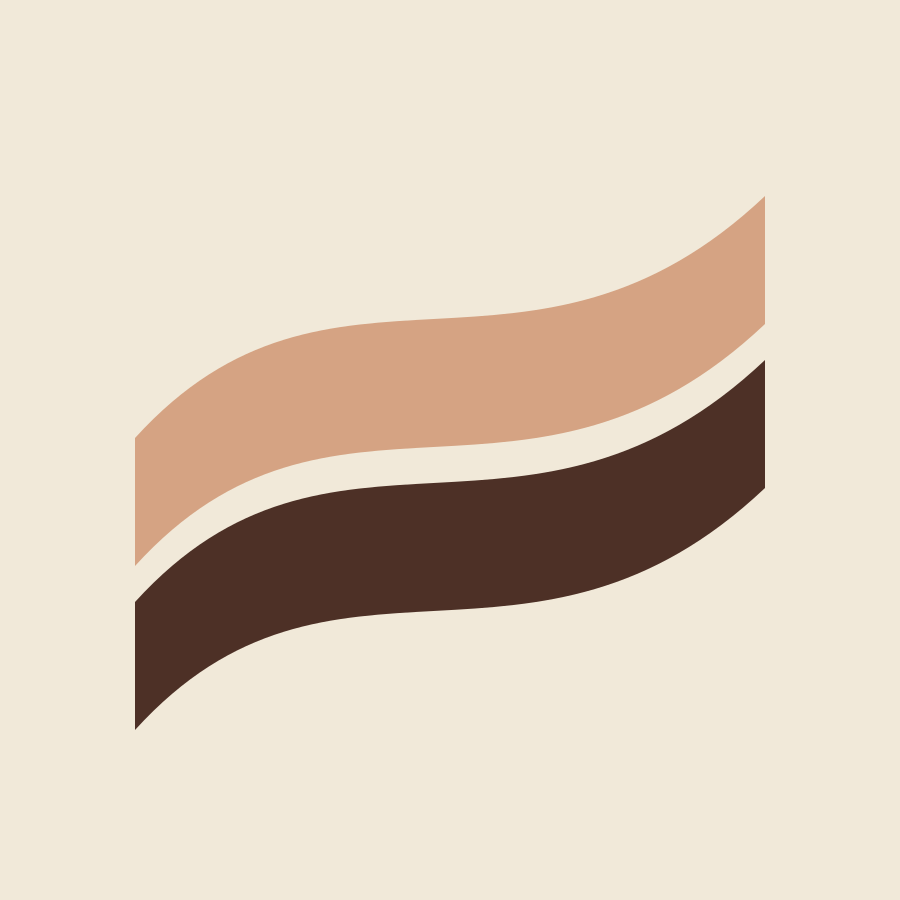
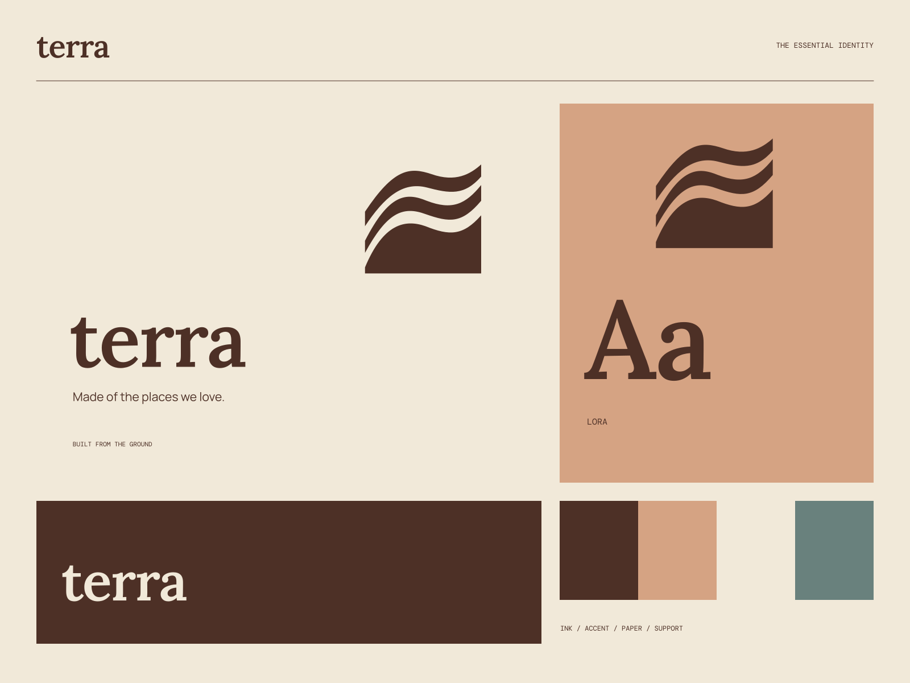

01
Begin with the place
An approach shaped by the landscape and the life already there.
ARCHITECTURE / LANDSCAPE / MATERIAL
Made of the places we love. A place, understood from the ground.

A coherent little world
A place, understood from the ground. Made of the places we love.
01
An approach shaped by the landscape and the life already there.
02
Honest surfaces, local character, and carefully considered form.
03
Thoughtful decisions for the way a place will be lived in.

The point of view
Stratified clay objects, contour-like architecture, raw material studies, and grounded serif contrasts. The identity keeps the landscape visibly present in every application.